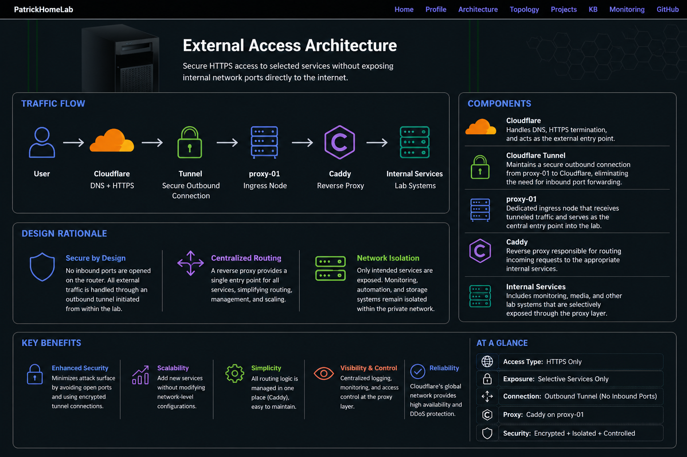

DNS, HTTPS termination, and external entry point.
Secure outbound connection without port forwarding.
Central ingress node for all incoming traffic.
Reverse proxy routing requests to services.
Internal systems selectively exposed.
No open ports. All traffic is tunneled securely.
One proxy handles all service exposure.
Only intended services are publicly accessible.